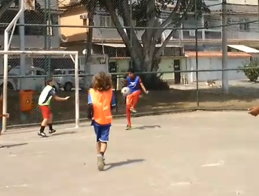

O jogo começou equilibrado no primeiro tempo com o Marolinha levando vantagem no placar por 2 a 1, com gols de Arthur Fernando e Guilherme para o Marolinha e Nathan Phelipe descontando para o Fla Cria. No segundo tempo brilhou a estrela do atacante Nathan Phelipe marcando mais 4 gols e encerrando a goleada Pedro Lucas fez mais um. Placar final Marolinha 2 x 6 Fla Cria.
